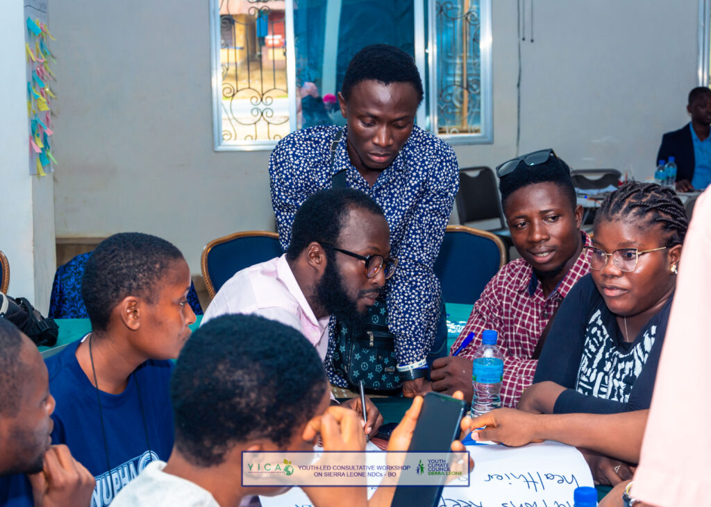

Youth Initiative for Climate Action and the Youth Climate Council, working with community partners and technical allies, have wrapped up the first two stops of the national Youth NDC Consultation tour.

The journey began in Bo on 9 and 10 June and continued in Makeni on 12 and 13 June, bringing sixty young leaders into direct conversation about Sierra Leone's climate commitments.
In Bo, participants travelled from across Bo and Kenema districts to examine the country's current Nationally Determined Contribution. Through climate story walls, breakout groups and action mapping, they linked textbook information to lived experience. Flood-damaged rice fields, collapsing market stalls and unreliable water taps were matched with practical solutions that the youth themselves can lead.
Top proposals included community early warning systems, flood resilient seed banks, and the conversion of organic market waste into compost and small business income. Young women pushed successfully for leadership quotas on district climate bodies, arguing that adaptation measures must benefit those who carry water, farm staple crops and care for children during storms.
Three days later the consultation team set up in Makeni, where youth from Bombali and neighbouring chiefdoms confronted a different but equally urgent climate story. Here, hotter dry seasons and fast disappearing tree cover dominate daily life. Participants proposed district tree nurseries managed by school eco clubs, solar micro grids to power rural enterprise, and a pilot programme for climate smart motorcycle taxis that reduce pollution without cutting jobs.
Accessibility advocates insisted that every climate project include clear information formats for young people with disabilities and safe evacuation routes for those with mobility challenges.
Across both cities common themes emerged. Young people want local data to inform national policy, direct access to climate finance for community projects, and transparent monitoring that shows where NDC money is spent. They see themselves not only as volunteers but as innovators, entrepreneurs and watchdogs who can deliver and track results.
All recommendations from Bo and Makeni are now being merged into a single Youth Position Brief. This document will be circulated to participants for validation, shared with government ministries, and tabled during the upcoming national review of Sierra Leone's NDC.
The organising team extends heartfelt thanks to the Fund for Global Human Rights for their support through the Legal Empowerment Fund, the Sierra Leone Meteorological Agency, supporting youth organizations, local media, and the volunteer logisticians whose quiet work kept each session running smoothly.
The consultation series now travels to Freetown for the final workshop on 16 and 17 June, where voices from the Western Area will complete this nationwide youth conversation.